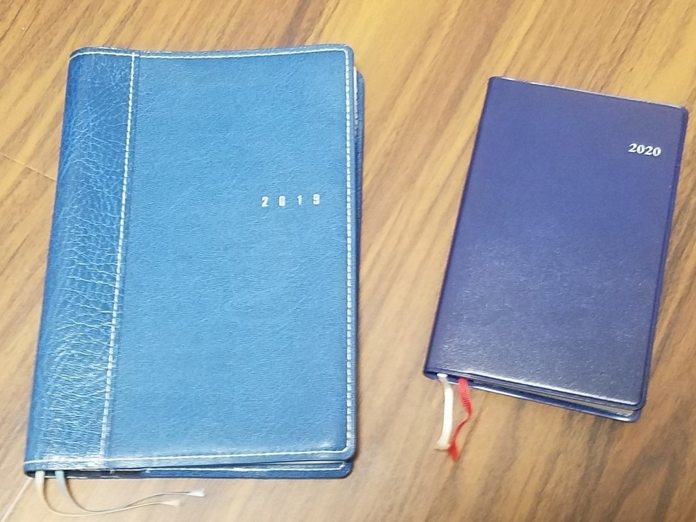

今年も残すところ5日を切ってしまった。
毎年のごとく巷では「年が過ぎるのは早い」という声を聞くし、自分も全くもってそう思う。今年のお正月をさすがに昨日のこととは言わないが、たった1か月ほど前のことだったんじゃないかという感覚があるのが怖い。笑
新しい年を迎える準備として挙げられるのが手帳の新調だ。年が変わる前に新しい手帳を買う、あの″ワクワク″が例年の楽しみでもある。なかには3年手帳や5年手帳といった年をまたいで使えるものも市販されているけど、僕は決まって毎年その年用の手帳を買っている。表紙に印字されている西暦。革の光沢。本とはまた違う手触り。スマートフォンやパソコンといったデバイスでは出会えない温もりは「予定管理」という作業を一味も二味も変えてくれる。
さて、手帳にも色々なサイズがあるが、2020年はコンパクトタイプを選択。
色は大抵紺か黒か茶色で、毎年毎年飽きずにローテーション。人にとって落ち着く色や好みの色は千差万別だから、自分以外の人がどんな手帳を使っているのか気になってしまう今日この頃。笑

手帳を新しくした際に密かにしていたことをここで白状すると、その年の抱負を書いている（ほかの人に盗み見られないように、なるべく小さな字で）。
今年の抱負を見返してみると「どんな日でも好きなことを継続する」と書かれてた。
そもそも、毎年抱負を立てても振り返る機会があまりないような気がしていたから手帳に書くようにしようと思ったことがきっかけだった。
改めて1年前の抱負を思い返してみると、1年分若い自分の気持ちを思い出せるような気分になる。けれど、こうして抱負を記事に書くと恥ずかしい。笑
やっぱり手帳に書く内容は手帳だけに収めていた方が自由気ままに書けるのかも。
さあ、2020年はどんな予定をこの手帳に書き加えるのだろう。
未来に飛び込む準備をしながら、残り少ない今年を走り切りたいな。
このnoteを読んでくださった皆さんに感謝しながら。来年も皆さんと笑顔で会えますように。